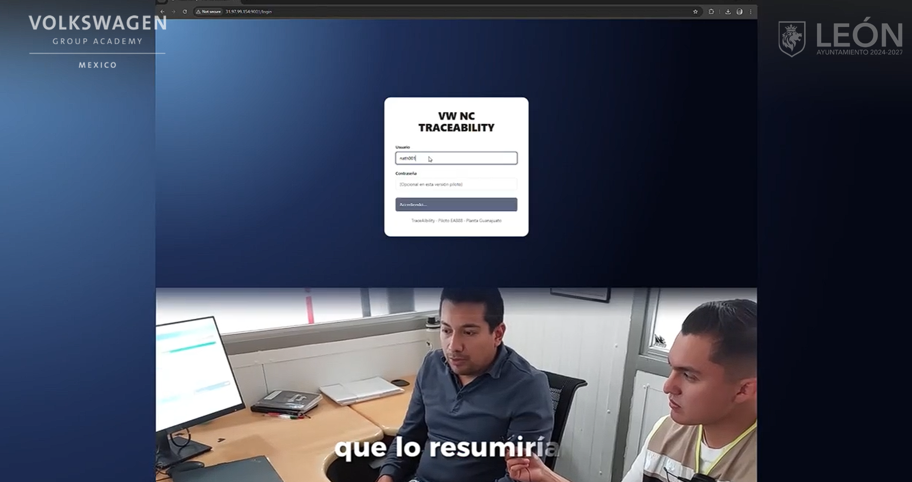

Manufactura automotriz
Trazabilidad de defectos en línea de ensamble
La planta llevaba los registros de fallas en sharepoints(Onedrive) y en un historial fisico, cada supervisor de calidad sabia sobre las fallas que el habia reportado, pero no habia una plataforma donde todo se automatizar e implementar por primera vez en la planta un algoritmo de IA para saber que hacer cuando se presenta una nueva falla
